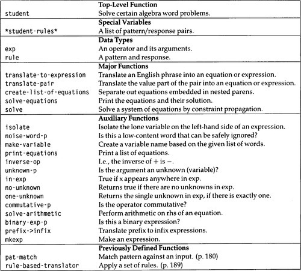

|
paip-ru
1
|
[Это] превосходный пример демонстрирующий силу использования значений(meaning) для решения лингвистических проблем.
MIT computer scientist
STUDENT еще одна ранняя программа понимания языка, написанная Дэниелом Боброу в качестве исследовательского проекта на степень доктора философии 1964 г. Она была разработана для чтения и решения задач со словами, которые можно найти в школьных учебниках по алгебре. Пример:
If the number of customers Tom gets is twice the square of 20% of the number of advertisements he runs, and the number of advertisements is 45, then what is the number of customers Tom gets?
(Если количество клиентов, которых получает Том, вдвое больше квадрата 20% от количества рекламных объявлений, которые он запускает, а количество рекламных объявлений равно 45, то какое количество клиентов получает Том?)
STUDENT правильно ответит, что клиентов 162. Для этого STUDENT должен быть гораздо более искушеннее, чем ELIZA; он должен обрабатывать и "понимать" большую часть вводимой информации, а не просто концентрироваться на нескольких ключевых словах. И он должен вычислять ответ, а не просто заполнять пробелы. Однако мы увидим, что программа STUDENT использует немногим больше, чем методы сопоставления с образцом ELIZA для преобразования входных данных в набор алгебраических уравнений. Поэтому он должен знать достаточно алгебры, чтобы решать уравнения, но она не очень сложная.
Разрабатываемая нами версия STUDENT является почти полной реализацией оригинала. Однако помните, что хотя оригинал был последним по состоянию на 1964 год, ИИ добился определенного прогресса за четверть века, как это будет показано в последующих главах.
Описание STUDENT такое:
pat-match в главе 6). !!!(p) {:.numlist}Например, у нас может быть образец формы (If ?x then ?y) с соответствующим ответом, в котором говорится, что ?x и ?y будут уравнениями или списками уравнений. Применив сопоставление входных данных указанных выше с образцом, ?y будет иметь значение (what is the number of customers Tomgets/ сколько клиентов Tomgets). Другой образец формы (?x is ?y) мог бы иметь ответ, соответствующий равенству, где ?x и ?y - две стороны одного равенства. Затем мы могли бы создать математическую переменную для (what) и другую для (the number of customers Tom gets/количество клиентов, которых получает Том). Мы бы распознали эту более позднюю фразу как переменную, потому что нет никаких образцов, которые позволили бы разбить её дальше. Напротив, фраза (twice the square of 20 per cent of the number of advertisements he runs/вдвое больше квадрата 20 процентов от количества рекламных объявлений, которые он запускает) может соответствовать образцу формы (twice ?x) и преобразовываться в (* 2 (the square of 20 per cent of the number of advertisements he runs)) и путем дальнейшего применения образцов формы (the square of ?x) и (?x per cent of ?y) мы могли бы прийти к окончательному ответу (* 2 (expt (* (/ 20 100) n) 2)), где n - переменная, генерируемая (the number of advertisements he runs/количество рекламных объявлений, которые он запускает).
Таким образом, нам нужно представить переменные, выражения, уравнения и наборы уравнений. Проще всего использовать то, что мы знаем: представить их так же, как это делает сам Лисп. Переменные будут символами, выражения и уравнения будут вложенными списками с префиксными операторами, а наборы уравнений будут списками уравнений. Имея это в виду, мы можем определить список правил образец-ответ, соответствующих типам утверждений, встречающихся в описаниях задач алгебры. Структура определений для правил повторется здесь, и добавляется структура выражений exp. lhs и rhs обозначают левую и правую стороны, соответственно. Обратите внимание, что конструктор mkexp определяется как конструктор, который строит выражения без использования аргументов ключеввых слов. Как правило, запись (:constructor fn args) создает функцию-конструктор с заданным именем и списком аргументов. 1
Мы проигнорировали запятые и точки в ELIZA, но они имеют решающее значение для STUDENT, поэтому мы должны сделать поправку на них. Проблема в том, что "," в Лиспе обычно можно использовать только в конструкции обратных кавычек, а "." обычно можно использовать только как десятичную точку или в точечной паре. Специального значения этих символьных знаков для читателя(reader) Лиспа можно избежать, поставив перед символьным знаком обратную косую черту (\,) или окружив знак вертикальными полосами (| , |).
Основной раздел STUDENTа будет искать по списку правил для ответа, как это делала ELIZA. Первое отклонение состоит в том, что перед тем, как мы подставим значения переменных pat-match в ответ, мы должны сначала рекурсивно преобразовать значение каждой переменной, используя тот же список правил образец-ответ. Другое отличие состоит в том, что после того, как мы закончим, мы не просто печатаем ответ; вместо этого мы должны решить систему уравнений и распечатать ответы. Краткое описание программы приведено на рис. 7.1.
| []() |
|---|

|
| Figure 7.1: Словарь для программы STUDENT |
(ed: this should be a markdown table)
Прежде чем внимательно взглянуть на программу, давайте попробуем рассмотреть пример задачи: "If z is 3, what is twice z?/Если z равно 3, сколько будет дважды z?" Применение правил к входу оставляет следующую трассу:
Есть две незначительных сложности. Во-первых, мы договорились реализовать наборы уравнений в виде списков уравнений. В этом примере все сработало, и ответом был список из двух уравнений. Но если используются вложенные образцы, ответ может быть чем-то вроде ((= a 5) ((= b (+ a 1)) (= c (+ a b)))), который не является списком уравнений. Функция create-list-of-sizes преобразует такой ответ в правильный список уравнений. Другая сложность - выбор имен переменных. Имея список таких слов, как (the number of customers Tom gets/количество клиентов, которых получает Том), мы хотим выбрать символ для их представления. Ниже мы увидим, что выбран символ customers/клиенты, но есть и другие возможности.
Вот основная функция для STUDENT. Сначала она удаляет слова, у которых нет содержимого, затем преобразует ввод в одно большое выражение с помощью translate-to-expression и разбивает его на отдельные уравнения с помощью create-list-of-equations. Наконец, функция solve-equations выполняет математические вычисления и выводит решение.
Функция translate-to-expression - это преобразователь на основе правил. Он либо находит какое-то правило в *student-rules* для преобразования ввода, либо предполагает, что весь ввод представляет собой единственную переменную. Функция translate-pair принимает пару привязки переменная/значение и преобразует значение рекурсивным вызовом translate-to-expression.
Функция create-list-of-equations принимает одно выражение, содержащее встроенные уравнения(равенства), и разделяет их на список уравнений:
Наконец, функция make-variable создает переменную для представления списка слов. Мы делаем это, сначала удаляя все "зашумляющие слова" из ввода, а затем беря первый оставшийся символ. Так, например, "the distance John traveled/расстояние, пройденное Джоном" и "the distance traveled by John", будут представлены одной и той же переменной distance, что безусловно, является правильным решением. Однако "the distance Mary traveled" также будет представлено той же переменной, что, безусловно, является ошибкой. Для ((the number of customers Tom gets/количество клиентов, которых получает Том) переменной будет customers, так как the, of и number - все это зашумляющие слова. Она будет соответствовать (the customers mentioned above/клиенты, упомянутые выше) и (the number of customers/количество клиентов), но не (Tom's customers`/клиенты Тома). На данный момент мы примем решение, первое не шумовое слово, но обратите внимание, что в упражнении 7.3 требуется исправление.
Следующим шагом будет написание раздела решения уравнений для STUDENT. Это больше упражнение по элементарной алгебре, чем по ИИ, но это хороший пример задачи манипулирования символами и, следовательно, интересная проблема программирования.
Программа STUDENT упоминала функцию solve-equations передав ей один аргумент, список уравнений, которые необходимо решить. solve-equations печатает список уравнений, пытаясь решить их с помощью solve и печатает результат.
Настоящая работа выполняется методом solve, который имеет следующую спецификацию: (1) Ищет уравнение, в котором ровно одно вхождение неизвестного. (2) Преобразует это уравнение так, чтобы неизвестное было изолировано в левой части. Это можно сделать, если мы ограничим возможные операторы +, -, * и /. (3) Выполняет арифметические действия в правой части, получая числовое значение для неизвестного. (4) Подставляет числовое значение вместо неизвестного во все другие уравнения и запоминает полученные значения. Затем пробует решить получившуюся систему уравнений. (5) Если шаг (1) завершился неудачно - если нет уравнения с точно одним неизвестным - тогда просто возвращает известные значения и не пытайтется решить что-либо еще.
В функцию solve передается система уравнений вместе со списком известных пар переменная/значение. Изначально переменные неизвестны, поэтому этот список будет пустым. solve просматривает список уравнений в поисках уравнения с точно одним неизвестным. Если она может найти такое уравнение, она вызывает isolate, чтобы решить уравнение в терминах этого неизвестного. Затем resolve подставляет значение переменной по всему списку уравнений и рекурсивно вызывает себя в результирующем списке. Каждый раз, когда resolve вызывает себя, она удаляет одно уравнение из списка уравнений, которые нужно решить, и добавляет одно в список известных пар переменная/значение. Поскольку список уравнений всегда становится короче, solve в конечном итоге должно завершиться.
isolate передается уравнение, которое гарантированно содержит одно неизвестное. Она возвращает эквивалентное уравнение с неизвестным, изолированным в левой части. Следует рассмотреть пять случаев: когда неизвестное остается только слева, все готово. Второй случай - когда неизвестное находится где-нибудь с правой стороны. Поскольку '=' коммутативно, мы можем свести проблему к решению эквивалентного уравнения переставленными левой и правой частями.
Далее мы должны иметь дело со случаем, когда неизвестное находится в сложном выражении в левой части. Поскольку мы допускаем четыре оператора, а неизвестное может быть справа или слева, существует восемь возможностей. Если X обозначает выражение, содержащее неизвестное, а A и B обозначают выражения без неизвестных, то возможны их следующие решения:
| []() | |
|---|---|
(1) X*A=B => X=B/A | (5) A*X=B => X=B/A |
(2) X+A=B => X=B-A | (6) A+X=B => X=B-A |
(3) X/A=B => X=B*A | (7) A/X=B => X=A/B |
(4) X-A=B => X=B+A | (8) A-X=B => X=A-B |
Возможности (1) - (4) обрабатываются случаем III, (5) и (6) случаем IV, и (7) и (8) случаем V. В каждом случае преобразование не дает нам окончательного ответа, поскольку X не обязательно должно быть неизвестным; это могло быть сложное выражение, связанное с неизвестным. Итак, мы должны снова вызвать isolate c полученным уравнением. Читатель должен попытаться проверить, что преобразования (1) - (8) действительны, и что случаи с III по V реализуют их правильно.
Напомним, чтобы доказать правильность функции, мы должны доказать, что она то что она в конечном итоге завершается и дает правильный ответ. Для рекурсивной функции с несколькими альтернативными случаями мы должны показать, что каждая альтернатива действительна, а также что, каждая альтернатива каким-то образом приближается к концу (что любые рекурсивные вызовы включают 'более простые' аргументы). Для isolate, элементарная алгебра показывает, что каждый шаг верен, или по крайней мере, почти верен. Деление обоих частей уравнения на 0 не дает эквивалентного уравнения и мы никогда не проверяли этого. Также возможно, что подобные ошибки могут возникнуть во время вызова eval. Однако, мы предположим, что уравнение имеет единственное допустимое решение, тогда isolate выполняет только законные преобразования.
Труднее всего доказать, что isolate завершается. Случай I явно завершается, и все остальные вносят свой вклад в изоляцию неизвестного расположенного с левой стороны. Для любого уравнения, последовательность(sequence) будет первым из возможных вариантов использования случая II, за которым последует ряд рекурсивных вызовов использующих случаи от III до V. Количество вызовов ограничено числом подвыражений в уравнении, поскольку каждый последующий вызов эффективно удаляет выражение слева и помещает его справа. Следовательно, предполагая, что вход имеет конечный размер, мы должны в конечном итоге достичь рекуривного вызова для isolate, который будет использовать случай I и завершаться.
Когда isolate возвращается, правая часть должна состоять только из чисел и операторов. Мы могли бы легко написать функцию для вычисления такого выражения. Однако нам не нужно прилагать таких усилий, поскольку функция уже существует. Структура данных exp была тщательно выбрана, чтобы быть той же структурой (списками с префиксными функциям), какую использует и сам Lisp для своих собственных выражений. Таким образом, Lisp обнаружит, что правая часть является приемлемым выражением, которое может быть вычислено, если ввести его на верхнем уровне. Lisp вычисляет выражения, вызывая функцию eval, поэтому мы можем вызывать eval напрямую и получить возвращаемое из неё число. Функция solve-arithmetic возвращает уравнение вида (= var number).
Вспомогательные функции для solve показаны ниже. Большинство из них просты, но я отмечу некоторые из них. Функция prefix->infix принимает выражение в префиксной нотации и преобразует его в инфиксное выражение, полностью заключенное в скобки. В отличии от isolate, она предполагает, что выражения будут реализованы в виде списков. prefix->infix используется в print-equations для создания более читабельного вывода.
Вот пример solve-equations в действии, с системой двух уравнений. Читатель должен пройти тарссировку, обнаруживая какой случай использовался при каждом вызове isolate, и проверяя правильность/точность каждого шага.
Теперь давайте займемся строкой форматирования "~%~a~{~% ~{ ~ a ~}~}~*%"* в print-equations. Она может показаться бессмысленной тарабарщиной, но на самом деле в ней есть определенный смысл. format обрабатывает строку, печатая каждый символьный знак, за исключением "~" указывающим на некоторые специальный действия форматирования, зависящие от следующего за ним знака. Комбинация "~%" печатает знак новой строки, а "~a" печатает следующий аргумент format, который еще не использовался. Таким образом четыре знака строки форматирования: "~%~a", выводят знак новой строки, за которым следует аргумент header. Комбинация "~{" обрабатывает соответствующий аргумент как список, и обрабатывает каждый элемент списка в соответствии со спецификацией между "~{" и следующими "~}". В данном случае, equations представлляет собой список уравнений, и каждое уравнение печатается с новой строки ("~%") за которой следует два пробела, после чего следует обработка самого уравнения как списка, где каждый элемент печатается в формате "~a" с пробелом перед ним. Значение t указанное в качестве первого аргумента для format означает вывод на стандартный поток вывода; так же может быть указан другой выходной поток.
Одно из неприятных мелких упущений в Lisp заключается в том, что нет стандартного соглашения о том, где печатать знаки новой строки! В Си, например, самая первая строка кода в справочном руководстве выглядит так
Она ясно дает понять, что знак новой строки печатается после каждой линии. Это соглашение настолько укоренилось в мире UNIX, что некоторые UNIX программы будут уходить в бесконечный цикл, если последняя строка в файле не заканчивается знаком новой строки. В Лиспе, однако, функция print ставит знак новой строки перед печатаемым объектом и пробел после него. Некоторые программы на Лиспе переносят политику перехода на новую строку перед format, а другие используют политику перехода на новую строку после. Это становится проблемой только тогда, когда вы хотите объединить две программы, написанные под разными политиками. Как возникли две конкурирующие политики? В UNIX была только одна разумная политика, потому что весь ввод в интерпретатор UNIX (оболочку/shell) завершался знаками новой строки, поэтому небыло необходимости в предшествующем знаке новой строки. Однако в некоторых интерпетаторах Lisp ввод может быть завершен соответствующей правой круглой скобкой. В этом случае, требуется предшествующий знак новой строки, чтобы вывод не отображался в той же строке, что и ввод.
Упражнение 7.1 [m] Реализуйте print-equations используя только примитивные функции печати, такие как terpri и princ, а также явные циклы.
Теперь перейдем к примерам, взятым из диссертации Bobrow's. В первом примере, перед словом "then/что" необходимо вставить "what/затем", чтобы получить правильный ответ:
Обратите внимание, что наша программа печатает значения всех переменных, которые она может найти, в то время как программа Bobrow's выводила только те значения, которые явно были запрошены в тексте. Это пример того, что "больше значит меньше", т.е. напечатать все ответы может и впечатляюще, но на самом деле это легче сделать, чем решить, какие именно ответы следует распечатать. Следующий пример решен не правильно:
Этот пример указывает на два важных ограничения нашей версии student по сравнению с программой Bobrow's. Первая проблема заключается в именовании переменных. Фразы "the daily cost of living for a group(суточный прожиточный минимум для группы)" и "this cost(эта стоимость)" означают одно и тоже количество, но наша программа дает им имена daily(день) и cost(стоимость) соответственно. Программа Bobrow's обрабатывала названия, сначала рассматривая фразы как одинаковые, только если они идеально совпадали. Если результирущую систему уравнений нельзя было решить, она пыталась снова, на этот раз считая фразы с одинаковыми словами идентичными. (См. следующие упражнения.)
Другая проблема заключается в нашей функции solve. Предполагая, что мы правильно присвоили переменные, solve может свести набор уравнений к двум:
Это набор двух линейных уравнений с двумя неизвестными и имеет единственное решение при RUNNING = 2, OVERHEAD = 20. Но наша версия solve не смогла найти это решение, поскольку ищет уравнения с одним неизвестным. Вот еще один пример, с которым student хорошо справляется:
Но небольшое изменение приводит к проблеме:
У этой проблемы нет правильного решения, потому что она предполагает деление на 0 (Robin's height). Но student готов преобразовать первое уравенение в:
и затем подставить полученный 0 для FRAN. Хуже того, деление на ноль, может появиться внутри eval:
Однако можно утверждать, что неприятные примеры с делением на ноль не встречаются в текстах по алгебре.
Таким образом, STUDENT ведет себя достаточно хорошо, делая гораздо больше, чем просто игрушечная программа ELIZA. STUDENT так же довольно эффективен; на моей машине для каждого из предыдущих примеров требуется меньше одной секунды. Однако, его все еще можно расширить, чтобы иметь более мощные возможности для решения уравнений. Другое дело - его лингвистический охват. Хотя можно добавлять новые шаблоны, она на самом деле являются лишь уловками и не отражают основную структуру английских предложений. Вот почему подход принятый в STUDENT был оставлен как тема для исследования.
Bobrow's Ph.D. thesis contains a complete description of STUDENT. It is reprinted in Minsky 1968. Since then, there have been several systems that address the same task, with increased sophistication in both their mathematical and linguistic ability. Wong (1981) describes a system that uses its understanding of the problem to get a better linguistic analysis. Sterling et al. (1982) present a much more powerful equation solver, but it does not accept natural language input. Certainly Bobrow's language analysis techniques were not very sophisticated by today's measures. But that was largely the point: if you know that the language is describing an algebraic problem of a certain type, then you don't need to know very much linguistics to get the right answer most of the time.
Exercise 7.2 [h] Ранее мы говорили, что наша программа не может решать пары линейных уравнений, например:
Первоначальная программа STUDENT могла решить эти уравнения. Напишите Write a routine to do so. You may assume there will be only two equations in two unknowns if you wish, or if you are more ambitious, you could solve a system of n linear equations with n unknowns.
Exercise 7.3 [h] Реализуйте версию алгоритма именования переменных Боброу. Вместо того, чтобы брать первое слово каждого уравнения, создайте уникальный символ и свяжите с ним весь список слов. На первом проходе каждый неравный список слов будет считаться отдельной переменной. Если решение не достигнуто, списки слов, которые имеют общие слова, считайте одной и той же переменной, и попытка решения предпринимается снова. Например, входные данные, содержащие фразы "the rectangle's width"(ширина прямоугольника) и "the width of the rectangle"(ширина прямоугольника), могут присвоить этим двум фразам переменные v1 иv2. Если попытка решить проблему не дает решения, программа должна понять, что v1 и v2 имеют общие слова "rectangle"(прямоугольник) и "width"(ширина), и добавить уравнение (= v1 v2) и повторить попытку. Поскольку переменные являются произвольными символами, процедура печати, вероятно, должна печатать фразы, связанные с каждой переменной, а не с саму переменную.
Exercise 7.4 [h] Первоначальный STUDENT также имел набор «общеизвестных» уравнений, которые он мог использовать при необходимости. В основном это были факты о коэффициентах преобразования, например (1 inch = 2.54 cm), т.е. 1 дюйм = 2,54 см». Также были включены уравнения типа (distance equal s rate times time), т.е. расстояние равно скорости умноженной на время, которые можно было использовать для решения таких задач, как: If the distance from Anabru to Champaign is 10 miles and the time it takes Sandy to travel this distance is 2 hours, what is Sandy's rate of speed?"(Если расстояние от Анабру до Шампейна составляет 10 миль, а время, необходимое Сэнди, чтобы преодолеть это расстояние, составляет 2 часа, то какое скорость Сэнди?) Внесите изменения, чтобы включить эту возможность. Вероятно, это помогает только в сочетании с решением предыдущего упражнения.
Exercise 7.5 [h] Измените student так, чтобы он печатал значения только тех переменных, которые запрашиваются в задаче. То есть, если дана задача "X равно 3. Y равно 4. Сколько X + Y?" Он не должен печатать значения для X и Y.
Exercise 7.6 [m] Попробуйте STUDENT по следующим примерам. Убедитесь, что вы правильно обрабатываете специальные символы:
(a) The price of a radio is 69.70 dollars. If this price is 15% less than the marked The number of soldiers the Russians have is one half of the number of guns !!!(p) {:.numlist1}
(b) The number of soldiers the Russians have is one half of the number of guns they have. The number of guns they have is 7000. What is the number of soldiers they have? !!!(p) {:.numlist1}
(c) If the number of customers Tom gets is twice the square of 20 % of the number of advertisements he runs, and the number of advertisements is 45, and the profit Tom receives is 10 times the number of customers he gets, then what is the profit? !!!(p) {:.numlist1}
(d) The average score is 73. The maximum score is 97. What is the square of the difference between the average and the maximum? !!!(p) {:.numlist1}
(e) Tom is twice Mary's age, and Jane's age is half the difference between Mary and Tom. If Mary is 18 years old, how old is Jane? !!!(p) {:.numlist1}
(f) What is 4 + 5* 14/7? !!!(p) {:.numlist1}
(g) x x b = c + d. b x c = x. x = b + b. b = 5. !!!(p) {:.numlist1}
Exercise 7.7 [h] Инфиксно-префиксные правила Student правильно учитывают приоритет операторов, но они не обрабатывают ассоциативность стандартным образом. Например, (12 - 6 - 3) переводится как (- 12 (- 6 3)) или 9, когда обычное соглашение интерпретирует это как (- (- 12 6) 3) или «3». Исправьте ученика, чтобы он справился с этим соглашением.
Exercise 7.8 [d] Найдите математически ориентированную область, достаточно ограниченную, чтобы STUDENT мог решать в ней задачи. Примером может служить химия растворов (расчет концентраций pH). Напишите необходимые *student-rules* и протестируйте полученную программу.
Exercise 7.9 [m] Проанализируйте сложность one-unknown и внедрите более эффективную версию.
Exercise 7.10 [h] Статья Боброу о STUDENT (1968) включает приложение, в котором абстрактно описываются все проблемы, которые может решить его система. Создайте аналогичную характеристику для этой версии программы.
Answer 7.1
Answer 7.9one-unknown очень неэффективен, потому что он ищет каждый подкомпонент выражения дважды. Например, рассмотрим уравнение:
(= (+ (+ x 2) (+ 3 4)) (+ (+ 5 6) (+ 7 8)))
Чтобы решить, есть ли у него одно неизвестное, one-unknown вызовет no-unknown в левой части, и, поскольку он не работает, вызовет его снова в правой части. Хотя нужно рассмотреть только восемь атомов, в конечном итоге он вызывает «no-unknown 17 раз и one-unknown 4 раза. В общем, для дерева глубины n выполняется примерно 2n вызовов no-unknown. Это явно расточительно; нет необходимости смотреть на каждый компонент более одного раза.
В следующей версии используется вспомогательная функция, find-one-unknown, у которой есть аккумулирующий параметр ʻunknown. Этот параметр может принимать три возможных значения: nil, что указывает на то, что ничего неизвестного не найдено; или единственное неизвестное, что было найдено до сих пор; или число 2, указывающее, что были обнаружены два неизвестных, и поэтому окончательный результат должен быть равен нулю. Функцияfind-one-unknown` имеет четыре случая: (1) Если мы уже нашли два неизвестных, то верните 2, чтобы указать это. (2) Если входное выражение является неатомарным выражением, то сначала посмотрите на его левую часть на предмет неизвестных и передайте результат, найденный на этой стороне, в качестве аккумулятора для поиска правой части. (3) Если выражение неизвестно, и если это второе найденное выражение, вернуть 2; в противном случае верните само неизвестное. (4) Если выражение представляет собой атом, который не является неизвестным, просто верните накопленный результат.
1Page 316 of Common Lisp the Language says, "Because a constructor of this type operates By Order of Arguments, it is sometimes known as a BOA constructor." !!!(p) {:.ftnote1}
1.8.13